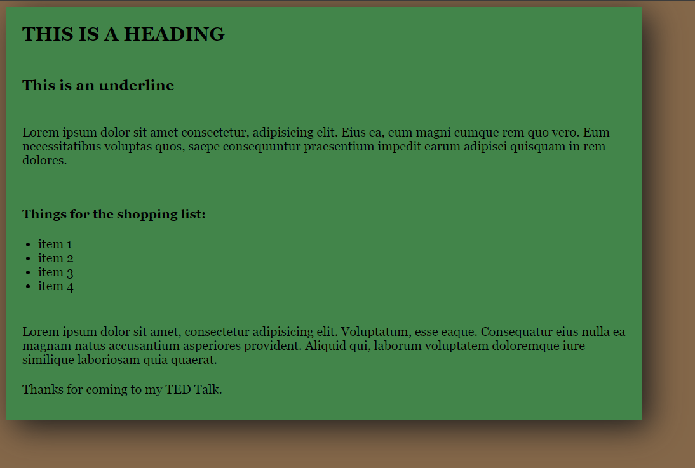
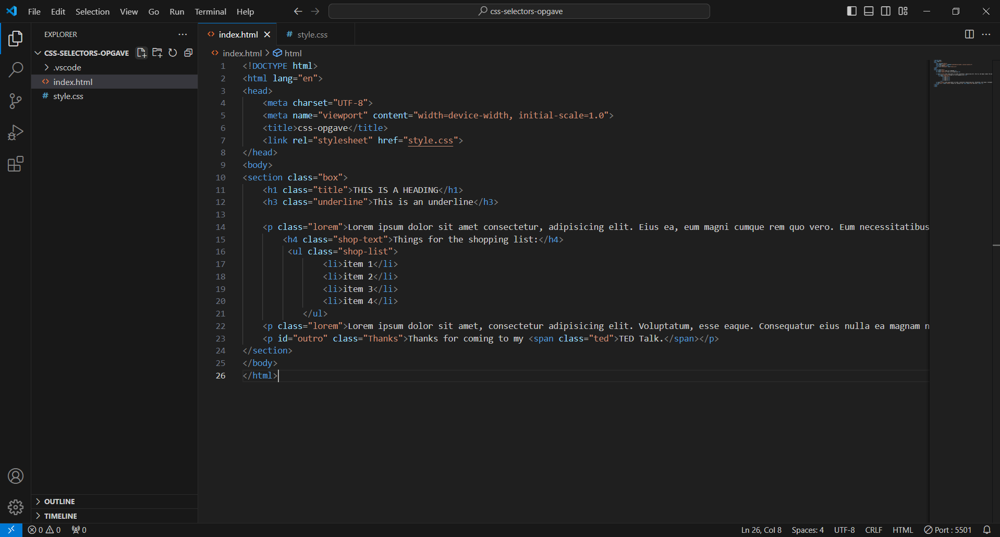
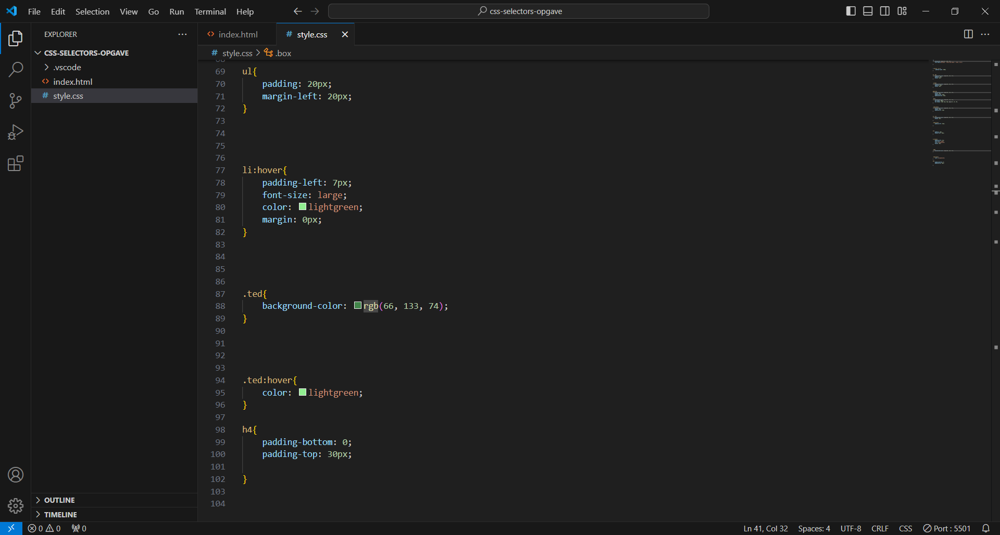

CSS Opgave
Denne opgave for mig var lidt en lege opgave. Vi skulle lave noget der indeholdte forskællige typer af CSS Selectors. Jeg prøvede ikke at lave noget professionelt, men i stedet kiggede mest efter hvad der skete hvis jeg skrev forskellige ting i koden.
Siden består simplet bare af en brun baggrund, en section med classen "box" som er farvet grøn og inde i den section er der en h1, h3, en paragraph med noget lorem tekst, en h4, en liste med fire items der har nogle hover effekter, endnu en lorem, og så en paragraph med en span til de sidste to ord, med en hover effekt.
Hover effekterne på listen er at de skifter farve fra sort til en lysere grøn, teksten bliver større og der er noget padding-left, så de står mere frem når man hover hen over dem. De sidste to ord på siden har kun en farve skift effekt, til samme grønne farve some hover effekten på listen.
Resultatet og koden ses her:
  Jeg har lært om hvordan man kan manipulere tekst, og dermed også links, til at se anderledes ud ved hjælp af de forskellige 'states' de kan befinde sig i, hvordan de skrives ind i koden.
Jeg havde lidt svært ved at forstå selectorsne som "not()", men fandt senere ud af det ved at prøve lidt frem.